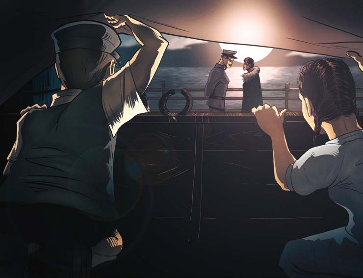

—Me fijé en él.
Ya comprobé su identidad.
Es un leal.
Lo mira, y el capitán asiente.
—Será mejor que entremos —sugiere ella en voz baja, y después se ríe.
—Deliciosa cena, capitán.
Felicite a los cocineros de mi parte.
Nunca había comido una langosta a la Termidor